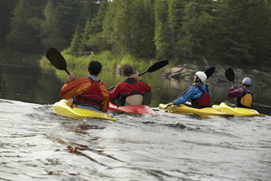

Module 1—Thinking Energy
Lesson 8—Molar Enthalpies of Formation
 Get Focused
Get Focused

© 2008 Jupiterimages Corporation
Since ecotours attract people from all over the world communication with ecotour participants is very important, especially where activities involve important safety instructions.
In previous lessons you learned many new terms, symbols, and methods for communicating aspects of thermodynamics. In Lesson 8 you will further your study of the enthalpy changes in chemical reactions by investigating the use of molar enthalpies of formation.
Consider the following question as you complete Lesson 8:
- How are standard molar enthalpies of formation used to determine the enthalpy change associated with chemical reactions?
 Module 1: Lesson 8 Assignment
Module 1: Lesson 8 Assignment
Download a copy of the Module 1: Lesson 8 Assignment to your computer now. This assignment covers material learned in Lessons 6,7, and 8.